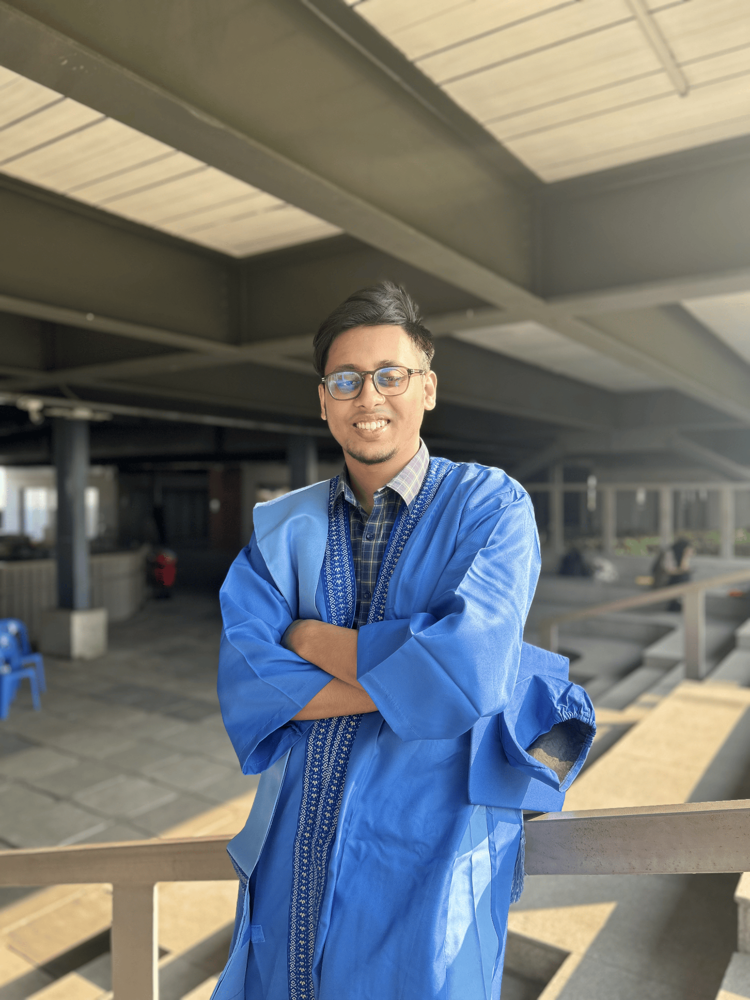
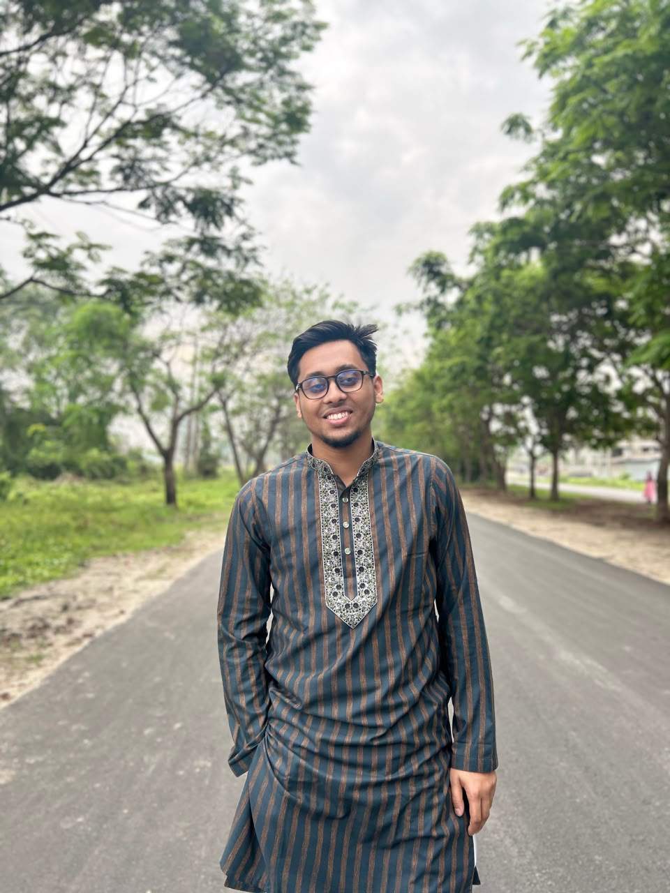
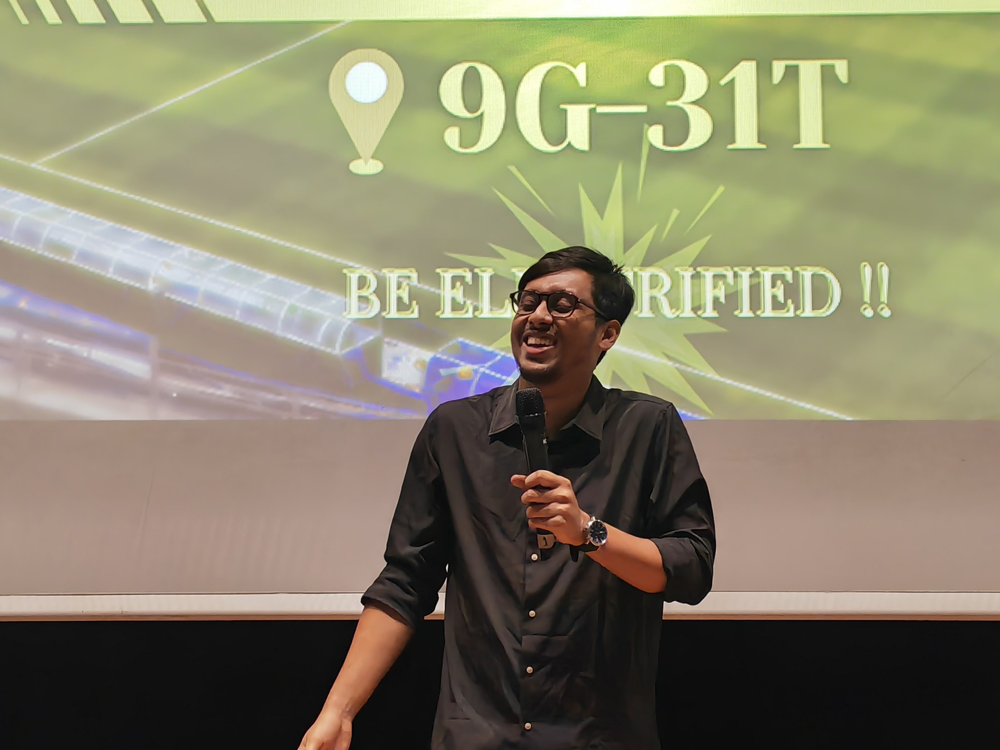
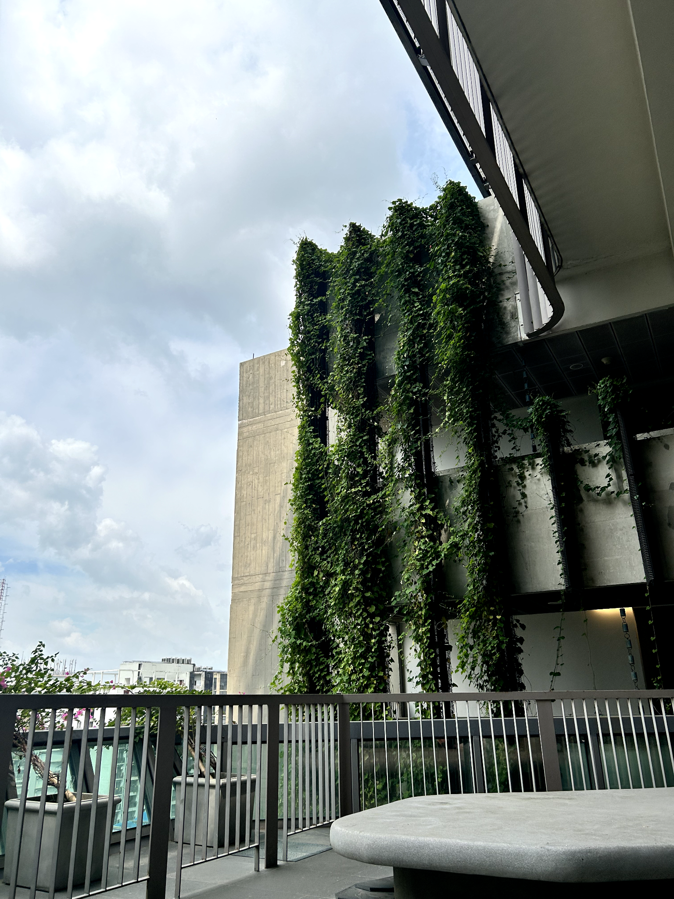
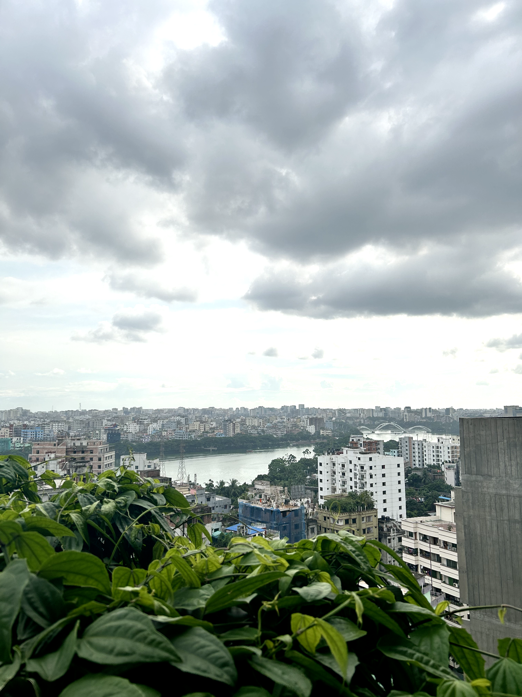

Dhaka, Bangladesh · Open to global opportunities
I turn technical work into structured delivery.
I am an engineering professional working across project planning, technical programme delivery, industry engagement and research operations—now extending that systems background into GIS for environment, infrastructure and urban development.
Current role: Engineer — Planning, Marketing & TrainingGraduate study: MSc in GIS for Environment & Development

Professional centreEngineering + organised execution
Current directionGIS · Infrastructure · Development
Professional evidence
Work measured by outcomes, not adjectives.
The numbers below come from delivered technical programmes and institutional outreach at FaboTronix—not generic skill claims.

Professional profile
At the centre of my work is execution.
I coordinate the people, information, resources and communication required to move a technical objective from idea to delivery. My experience spans hands-on engineering programmes, institutional engagement, product and R&D support, research administration and applied technology projects.
My electrical and electronic engineering background helps me understand systems, sensors and implementation constraints. My current MSc in GIS is widening that perspective toward spatial analysis, sustainable infrastructure, urban systems and disaster-risk decision support.
01
Technical understanding
EEE, IoT, sensors, automation, energy systems and hardware-centred prototyping.
02
Delivery discipline
Planning, documentation, stakeholder coordination, training operations and measurable follow-through.
03
Spatial direction
Developing GIS capability for infrastructure, environment, urban development and risk analysis.
Selected evidence
Images and words tell the same story.
Each visual below is directly connected to the work being described: project showcase, programme presentation and urban-environment observation.

Featured engineering project
Performance monitoring and predictive maintenance for a circular knitting machine
IoT-enabled condition monitoring using ESP32, sensors, dashboard development and machine-learning analysis.
Read the complete case study ↗
Programme delivery
Technical training, outreach and industry engagement
Planning and communicating practical programmes across students, institutes and industry partners.
View professional evidence ↗Current GIS direction
Environment, infrastructure and urban systems
Building spatial-analysis capability around flood, drainage, accessibility, risk and sustainable development.
Explore the research direction ↗How I work
Technical depth matters when it can be organised and delivered.
My contribution is strongest where engineering understanding must be converted into a practical plan, coordinated implementation and documented outcome.
Clarify the operating problem
Define the user, context, constraints, evidence and success criteria before proposing a solution.
Structure the delivery plan
Translate the objective into tasks, ownership, resources, timelines and documentation.
Coordinate people and systems
Keep technical work, communication, logistics and stakeholder expectations aligned.
Validate and communicate the outcome
Review performance, capture evidence, report clearly and improve the next delivery cycle.
Current graduate direction
Building an engineering–GIS profile for environment and infrastructure.
My MSc in GIS for Environment and Development is extending my systems background into spatial analysis, urban development, disaster risk, flood and drainage, transport, utilities and evidence-based infrastructure planning.
Spatial analysisRemote sensingUrban systemsDisaster riskFlood & drainageInfrastructure GIS
Explore research and GIS

Research communication
Selected publications.
Work across smart grids, renewable-energy systems, EV infrastructure and optimisation—presented without inflated claims or invented metrics.
Transformation and Future Trends of Smart Grid using Machine and Deep Learning.
International Journal of Applied Power Engineering (IJAPE)
Assessing the Feasibility and Performance of Solar–Wind Hybrid Power Plants in Coastal Areas of Bangladesh: A Techno-Economic Analysis.
Brunei International Conference on Engineering & Technology
Sizing an Off-Grid Photovoltaic System for a Regular East African Residence.
IEEE Xplore
Visual journal
Observation as a supporting practice.
A tightly curated selection from my own archive—architecture, urban atmosphere and coastal landscapes. The journal supports the portfolio; it does not compete with the professional work.
Contact